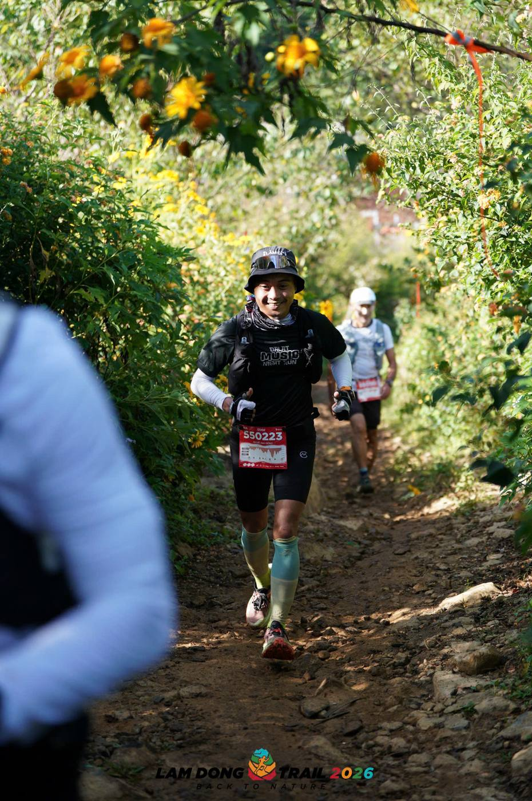
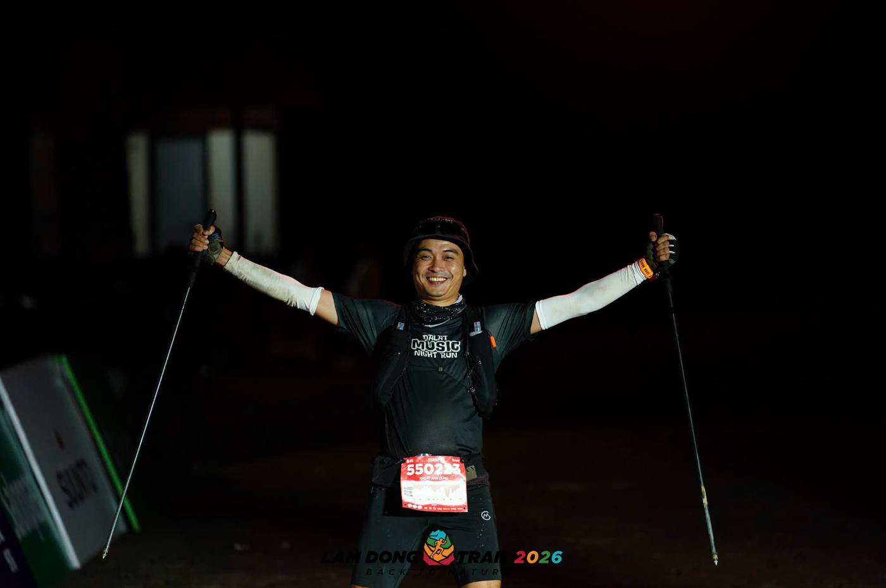

Ảnh thật hay ảnh AI: vì sao trên trang của tôi không có tấm ảnh người nào do AI vẽ
Tôi dùng AI mỗi ngày. Nhưng nếu bạn lướt hết các bài trên trang này, bạn sẽ không thấy một gương mặt nào do máy vẽ ra. Câu hỏi ảnh thật hay ảnh AI với tôi đã có câu trả lời từ tháng 9: AI được làm nền, làm chữ, làm số liệu — còn mặt người thì phải là mặt thật. Tuần trước, một buổi học cho tôi thêm một lý do nữa để giữ nguyên tắc đó.

Đường mòn dã quỳ ở giải Lâm Đồng Trail tháng 11/2026 — mệt, nhưng cười thật.
Một fanpage không có lấy một con người
Trong một buổi học marketing ở lớp CEO tôi đang theo, giảng viên mở lần lượt hơn hai chục fanpage của học viên và chấm ngay trên màn hình. Có một trang làm tôi nhớ mãi: bài đăng đều, hình ảnh bóng bẩy, màu sắc đẹp. Nhưng toàn bộ hình ảnh là do AI tạo ra — không một bóng người thật, không ảnh người sáng lập, không ảnh đội ngũ.
Nhận xét của thầy ngắn gọn: khách bấm vào sẽ có cảm giác đây là một "công ty ma". Không phải vì sản phẩm dở, mà vì người xem không tìm thấy ai đứng sau nó.
Tôi ngồi dưới lớp và nghĩ: một trang đẹp mà không có người thì cũng giống một văn phòng sang trọng mà không ai ngồi. Đi ngang qua thì thấy đẹp. Bước vào thì thấy lạnh.

Nguyên tắc tôi tự đặt từ tháng 9
Giữa tháng 9 năm nay, tôi tự đặt cho mình một luật: không dùng hình người do AI tạo ra ở bất kỳ đâu — bài viết, ảnh bìa video, bản tin gửi khách. AI chỉ được làm phần nền phía sau; chỗ có người thì phải là ảnh thật của tôi.
Lý do lúc đó khá đơn giản. Nghề của tôi là môi giới nhà đất — một nghề mà người ta giao cho mình những quyết định tiền tỷ. Tôi không thể nói với khách "hãy tin tôi" trên một trang mà ngay cả gương mặt cũng là đồ giả. Cũng giống điều tôi viết ở bài 19/11: chữ "thật" không tự xưng được, nó phải được nhìn thấy.
Buổi học tuần trước không đổi nguyên tắc đó, chỉ đổi sức nặng của nó. Trước đây tôi nghĩ dùng ảnh thật là "nên làm cho tử tế". Giờ tôi hiểu thêm: với người xem lần đầu, ảnh AI có thể là lý do để họ rời đi trước khi kịp đọc mình viết gì.
Ảnh thật hay ảnh AI — người xem cảm được bằng gì?
Tôi không phải chuyên gia hình ảnh, nên tôi không bàn chuyện kỹ thuật nhận biết. Tôi chỉ kể điều tôi thấy khi tự lật lại ảnh của chính mình.
- Ảnh thật có lỗi. Thiếu sáng, hơi mờ, tóc rối, áo nhăn, nụ cười lệch vì đang thở dốc. Ảnh do AI tạo thường không có những lỗi đó — và chính sự hoàn hảo ấy làm người ta thấy xa.
- Ảnh thật có bối cảnh lặp lại. Cùng một gương mặt xuất hiện ở lớp học, ở đường chạy, ở quán, ở công trường — qua nhiều tháng. Người xem không cần ai giải thích cũng thấy người này đang sống một cuộc đời có thật.
- Ảnh thật mang thời gian. Ảnh mùa hè và ảnh cuối năm của cùng một người không giống hệt nhau. Một gương mặt do máy vẽ thì không có thời gian trong đó.
Nói cách khác, ảnh thật không thuyết phục bằng độ đẹp. Nó thuyết phục bằng việc có dấu vết.
AI làm nền, làm chữ, làm số liệu — mặt người phải là mặt thật
Tôi không chống AI. Tôi dùng nó để soạn nháp, tổng hợp tin tức, sắp xếp số liệu, dựng phần nền cho một tấm ảnh bìa. Những việc đó giúp tôi có thêm thời gian cho phần chỉ mình làm được: đi xem đất, ngồi với khách, đứng quầy quán. Ranh giới tôi giữ chỉ có một:
| Để AI làm | Không để AI làm |
|---|---|
| Phần nền, hoa văn, khung chữ của ảnh bìa | Gương mặt, dáng người, bàn tay |
| Bản nháp đầu, gom tin, sắp số liệu | Câu chuyện "tôi đã trải qua" — phải là chuyện thật |
| Gợi ý tiêu đề, kiểm lỗi chính tả | Ảnh "khách hàng", "đội ngũ", "người sáng lập" giả |
Khi một tấm ảnh bìa cần có người, tôi lấy ảnh thật của mình ghép vào góc ảnh, chấp nhận nó trông kém "chuyên nghiệp" hơn một tấm ảnh vẽ.
Việc tôi đang làm: một thư viện ảnh thật cho trang này
Giữ nguyên tắc thì dễ, giữ đều mới khó. Viết mỗi ngày một bài, chẳng bao lâu tôi nhận ra mình đang dùng đi dùng lại vài tấm ảnh quen — có tấm làm ảnh bìa cho cả chục bài. Ảnh thật mà lặp mãi thì cũng nhạt như ảnh kho.
Nên từ tuần trước, tôi gom lại toàn bộ ảnh mình có thành một thư viện chia theo chủ đề: đi làm, đi học, chạy bộ, gia đình, quán, đi thực địa. Mỗi bài mới sẽ ưu tiên một tấm chưa từng xuất hiện trên trang. Ảnh nào có giấy tờ của khách, có người lạ rõ mặt chưa xin phép, có biển số xe — loại ngay, dù đẹp đến đâu. Và trước khi đăng, ảnh được xoá thông tin vị trí đi kèm.
Ảnh bìa hôm nay là một ví dụ: chụp ở giải Lâm Đồng Trail tôi vừa chạy. Không phải ảnh studio, không phải góc đẹp nhất. Nhưng đó là tôi, giữa đường chạy, đang cười thật.
Nếu bạn cũng đang làm trang của riêng mình
Ba điều tôi rút ra, dành cho ai đang xây một trang cá nhân hay một fanpage nhỏ:
- Đừng chờ máy xịn. Thầy nói một câu tôi ghi lại nguyên ý: đừng đợi có máy quay, có đèn, có phòng studio mới bắt đầu. Cái điện thoại trong túi là đủ.
- Để người thật xuất hiện. Bạn, đồng nghiệp, cái quầy hàng, cái kho — miễn là thật. Với người cùng làm, nhớ hỏi ý họ trước khi đăng.
- Dùng AI cho phần việc, đừng dùng AI cho phần người. Máy có thể viết giúp bạn câu chữ gọn hơn, nhưng không thể đứng ra làm gương mặt cho bạn.
Tôi vẫn đang học cách làm điều này cho đều. Có hôm ảnh xấu, có hôm thiếu ảnh. Nhưng tôi tin một trang có những tấm ảnh hơi xấu mà thật sẽ đi được đường dài hơn một trang toàn ảnh đẹp mà không có ai.
Bài viết chia sẻ trải nghiệm và nguyên tắc cá nhân của tôi khi làm trang này. Câu chuyện về fanpage được kể lại từ một buổi học, đã lược bỏ mọi thông tin có thể nhận ra chủ trang. Đây không phải đánh giá về bất kỳ công cụ AI nào.
"Rồi, ngày mới tốt lành nhé."
Sống tử tế · Kiếm tiền hạnh phúc · Cho đi giá trị
Muốn nói chuyện với một người thật?
Nếu anh/chị đang cần hỏi về nhà đất Nha Trang – Cam Lâm, hay chỉ muốn chia sẻ cách mình đang xây trang cá nhân, cứ nhắn tôi. Người trả lời là tôi.
Nhắn Zalo — 0869 668 638